如何解决问题
拒绝百度
尽量使用英语关键词搜索，看英文blog

全球最大的男性同性交友平台
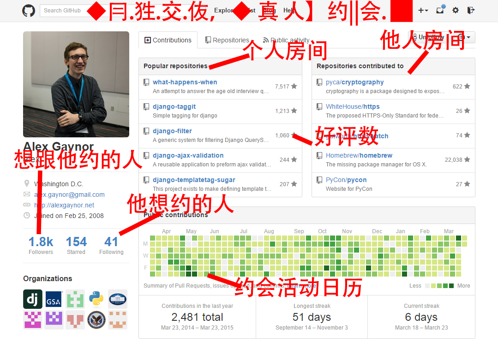技术点
后面的内容比较零散，我想哪里说到哪里.而且会推荐一些对应的我自己看过的书
Java
这个因为你们学的就是这个，所以我就不多讲了，就推荐一下好书
每个人都推荐，但真的看完没几个人的书
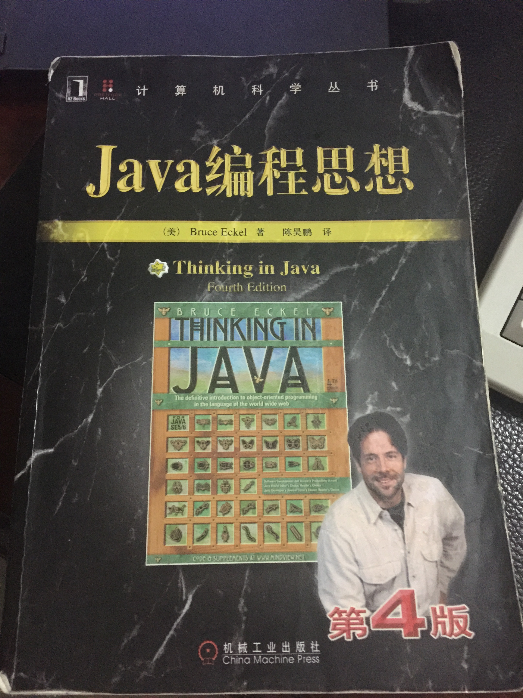强烈建议推荐看完1-6章
强烈建议花一天，看完第一个例子的书
性能调优的书
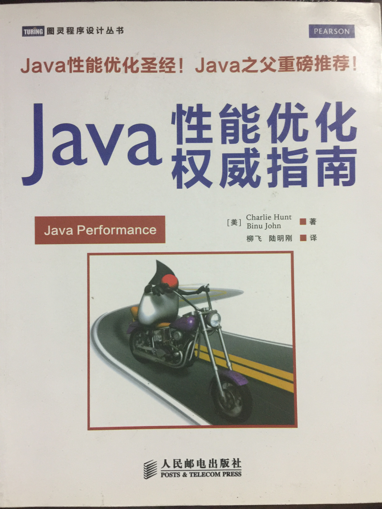进阶书
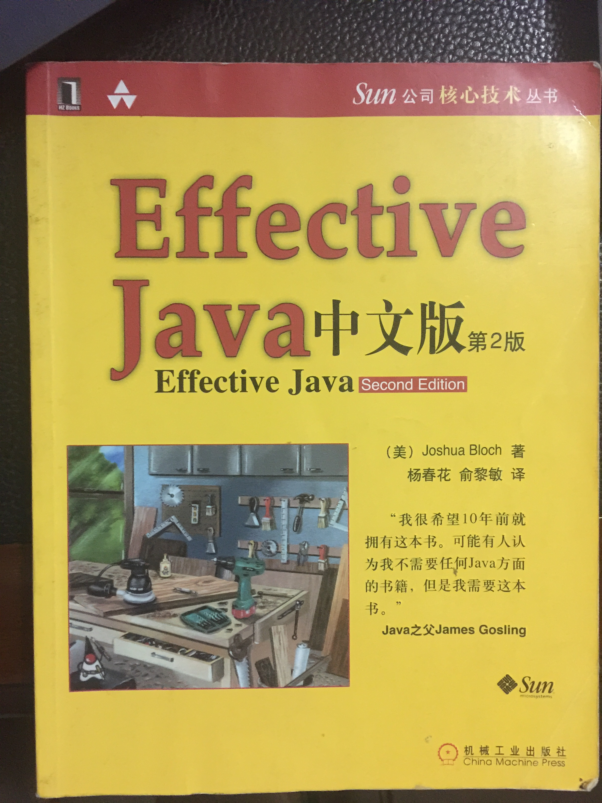并发编程
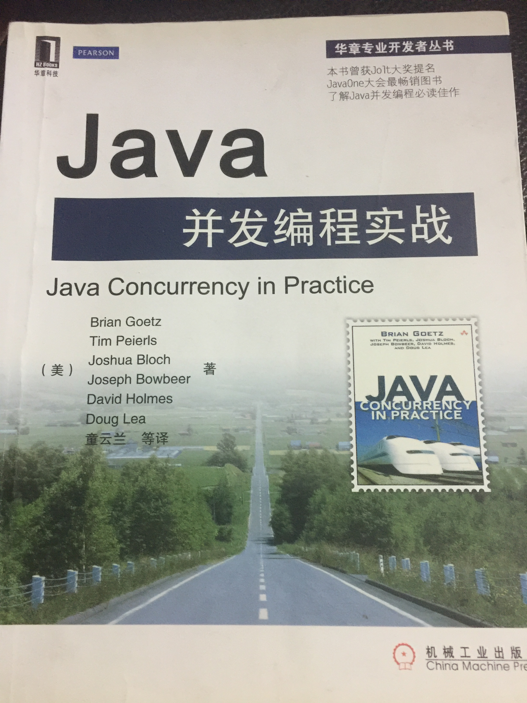纯粹出于好玩看的书
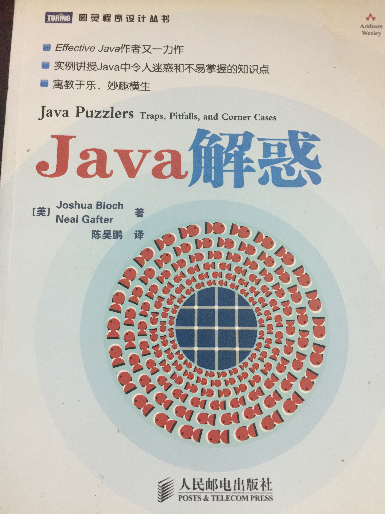JVM的书
Linux/Unix
你现在是用的开发环境是在windows下，但是公司的测试，生产环境是用的是Linux环境
- 建议安装虚拟机 Ubuntu或者CentOS
- 了解Unix和Linux的关系，Linux家族
- 远程连接是用的ssh
- 基本的命令
- 文件，文件类型和权限
- 输入，输出，管道
- 进程
- vi/vim
- shell
鸟哥
Linux就是那个范

Git
建议使用命令行窗口进行来操作配置
三个阶段
合并
Gerrit
HTTP
URL

HTTP请求和响应
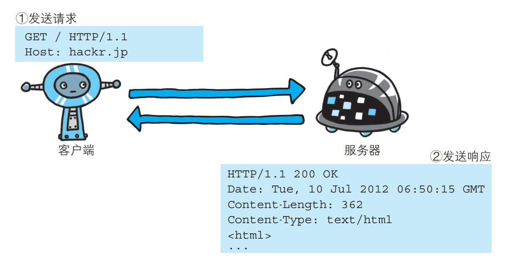Request
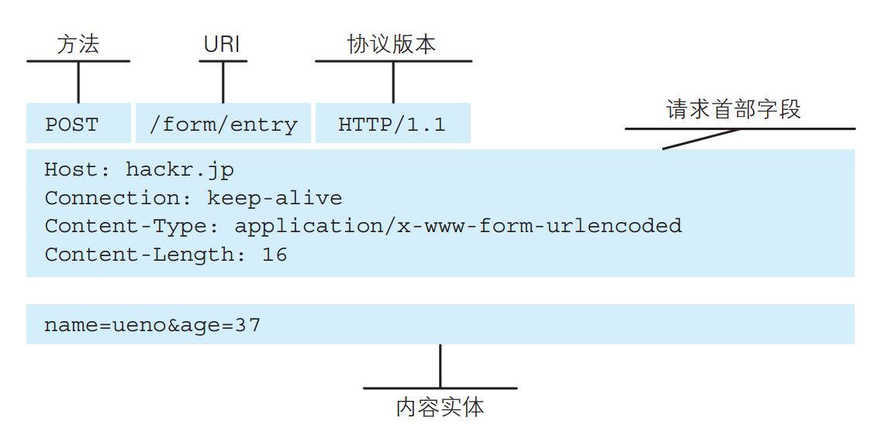Response
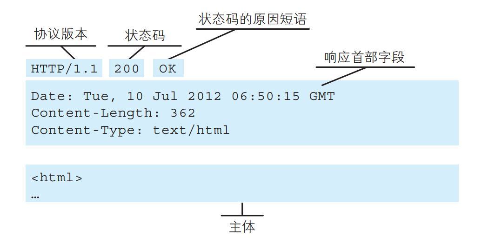HTTP是无状态的
Cookie
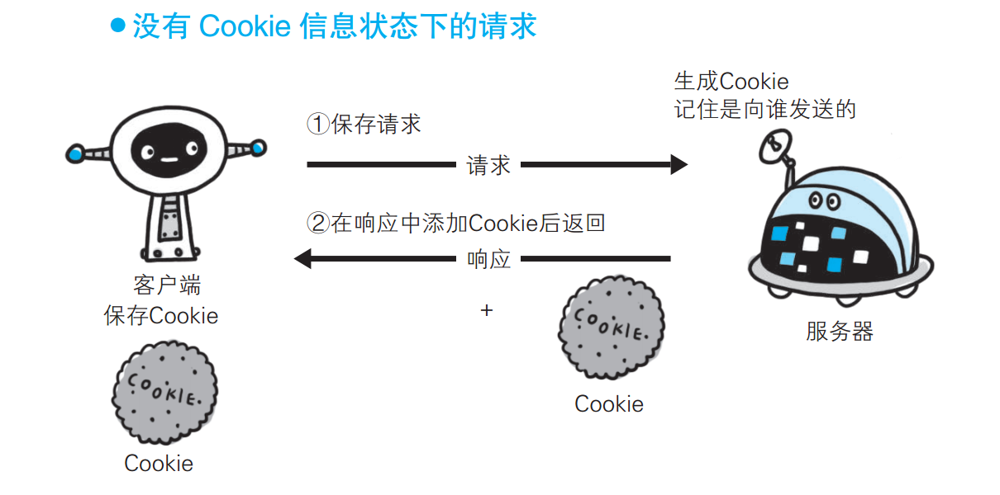Cookie
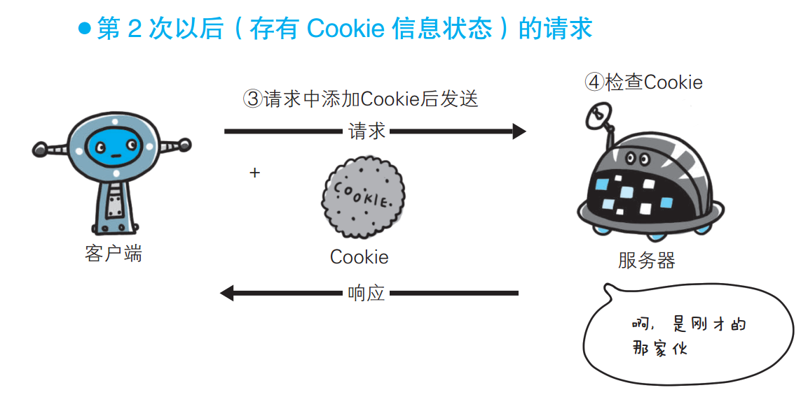Http Method
GET, POST, PUT, DELETE, OPTION, PATCH
Http Status Code

OSI Layers
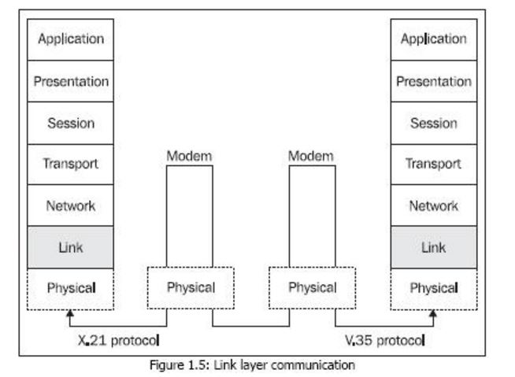HTTP安全问题
HTTP的request和reponse都是纯文本的内容，在网络传输的时候存在被窃听和篡改的危险HTTPS

对称加密
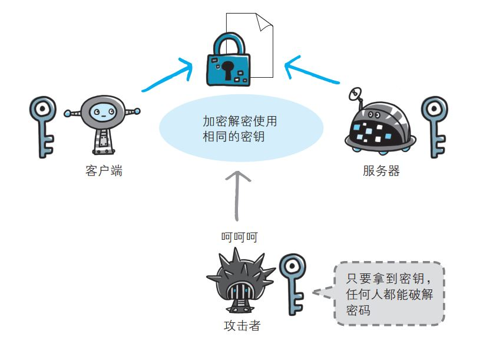私钥公钥加密
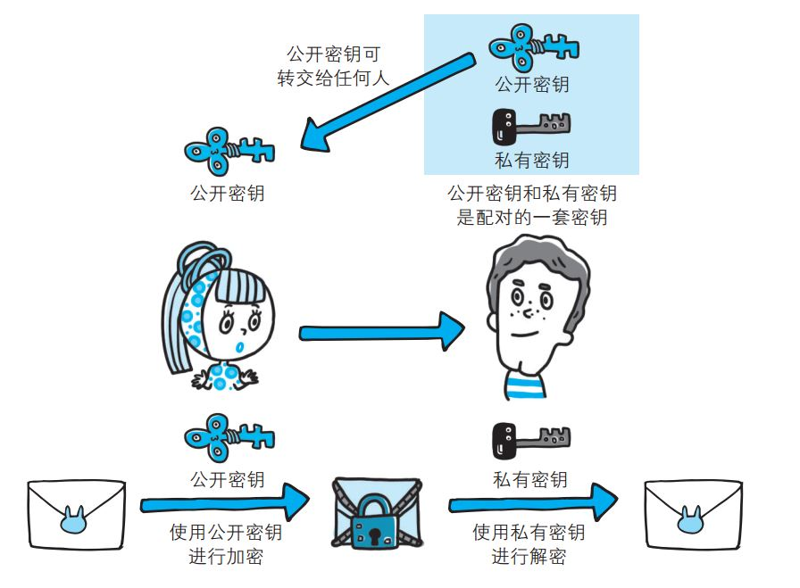如何证明公钥是想访问服务器的证书
CA 数字证书认证机构
HTTP协议入门书
当前你们使用的系统的架构
HTTP
user agent ------------------------------> web server
------------------> DB
java动态生成html文件
<---------------------------------
当前流行的另一种选择
HTTP
user agent --------------------------------> web server
<------------------------------ 静态html和js文件
js代码 --------------------------------> java生成查询数据
js将数据添加 <-------------------------------- 返回JSON格式文本
到html
JSON
[
{
"id": 1,
"name": "Leon",
"age": 33,
"gender": "male"
},
{
"id": 2,
"name": "Ada",
"age": 33,
"gender": "female"
}
]
---------> 接受 Http Request, 解析URL参数，调用方法
-------------------------（框架处理）----------------------------------
public List getUsers(Filter filter) {.....}
------------------> DB
ArrayList <----------------
------------------------（框架处理）----------------------------------
Jakson 处理
|
<---- http response {.....} 文本
XML
---------> 接受 Http Request, 解析URL参数，调用方法
-------------------------（框架处理）----------------------------------
public List getUsers(Filter filter) {.....}
------------------> DB
ArrayList <----------------
------------------------（框架处理）----------------------------------
JAXB 处理
|
<---- http response XML 文本
Restful
HTTP的URL作为接口，按照resource来定义接口，通过HTTP METHOD来定义动作
GET /users/123
创建一个新的用户
POST /users
{
"name": "Leon",
"age": 32,
"gender": "male"
}
HTTP/1.1 201 Created
location: /users/123
{
"id": 1
"name": "Leon",
"age": 32,
"gender": "male"
}
修改用户
PUT /users/1
{
"name": "Leon",
"age": 33,
"gender": "male"
}
POST PUT的区别
只想修改age,进行部分修改
PATCH /users/1
[{"op": "replace", "path": "/age", "value": 33}]
获取所有的用户
GET /users
获取特定的用户
GET /users/1
CI
Continues Integeration
CI必备条件
版本管理工具
GIT
build工具
Maven
测试代码
CI工具
Jenkins
- 下载代码
- 自动build并运行测试
- 统计结果，制作报表
- 通知
Code
写一个方法，判断传入的字符串长度是否小于50， 如果是，返回true，否则返回false
- 写一段代码，数组[1, 2, 3]， 生成新的数组[1, 4, 9]
- 写一段代码，数组[1, 2, 3]， 生成新的数组[2, 3, 4]
- 写一段代码，数组[1, 2, 3]， 生成新的数组[2, 4, 6]
觉得自己项目中写的代码质量高吗？
怎么办呢？
Sonar
Demo
Vertical Slides
Slides can be nested inside of each other.
Use the Space key to navigate through all slides.
Basement Level 1
Nested slides are useful for adding additional detail underneath a high level horizontal slide.
Basement Level 2
That's it, time to go back up.
Slides
Not a coder? Not a problem. There's a fully-featured visual editor for authoring these, try it out at http://slides.com.
Point of View
Press ESC to enter the slide overview.
Hold down alt and click on any element to zoom in on it using zoom.js. Alt + click anywhere to zoom back out.
Touch Optimized
Presentations look great on touch devices, like mobile phones and tablets. Simply swipe through your slides.
Fragments
Hit the next arrow...
... to step through ...
... a fragmented slide.
Fragment Styles
There's different types of fragments, like:
grow
shrink
fade-out
current-visible
highlight-red
highlight-blue
Transition Styles
You can select from different transitions, like:
None -
Fade -
Slide -
Convex -
Concave -
Zoom
Themes
reveal.js comes with a few themes built in:
Black (default) -
White -
League -
Sky -
Beige -
Simple
Serif -
Blood -
Night -
Moon -
Solarized
Slide Backgrounds
Set data-background="#dddddd" on a slide to change the background color. All CSS color formats are supported.
Image Backgrounds
<section data-background="image.png">Tiled Backgrounds
<section data-background="image.png" data-background-repeat="repeat" data-background-size="100px">Video Backgrounds
<section data-background-video="video.mp4,video.webm">... and GIFs!
Background Transitions
Different background transitions are available via the backgroundTransition option. This one's called "zoom".
Reveal.configure({ backgroundTransition: 'zoom' })Background Transitions
You can override background transitions per-slide.
<section data-background-transition="zoom">Pretty Code
function linkify( selector ) {
if( supports3DTransforms ) {
var nodes = document.querySelectorAll( selector );
for( var i = 0, len = nodes.length; i < len; i++ ) {
var node = nodes[i];
if( !node.className ) {
node.className += ' roll';
}
}
}
}
Code syntax highlighting courtesy of highlight.js.
Marvelous List
- No order here
- Or here
- Or here
- Or here
Fantastic Ordered List
- One is smaller than...
- Two is smaller than...
- Three!
Tabular Tables
| Item | Value | Quantity |
|---|---|---|
| Apples | $1 | 7 |
| Lemonade | $2 | 18 |
| Bread | $3 | 2 |
Clever Quotes
These guys come in two forms, inline:
“The nice thing about standards is that there are so many to choose from”
and block:
“For years there has been a theory that millions of monkeys typing at random on millions of typewriters would reproduce the entire works of Shakespeare. The Internet has proven this theory to be untrue.”
Intergalactic Interconnections
You can link between slides internally, like this.
Speaker View
There's a speaker view. It includes a timer, preview of the upcoming slide as well as your speaker notes.
Press the S key to try it out.
Export to PDF
Presentations can be exported to PDF, here's an example:
Global State
Set data-state="something" on a slide and "something"
will be added as a class to the document element when the slide is open. This lets you
apply broader style changes, like switching the page background.
State Events
Additionally custom events can be triggered on a per slide basis by binding to the data-state name.
Reveal.addEventListener( 'customevent', function() {
console.log( '"customevent" has fired' );
} );
Take a Moment
Press B or . on your keyboard to pause the presentation. This is helpful when you're on stage and want to take distracting slides off the screen.
Much more
- Right-to-left support
- Extensive JavaScript API
- Auto-progression
- Parallax backgrounds
- Custom keyboard bindings